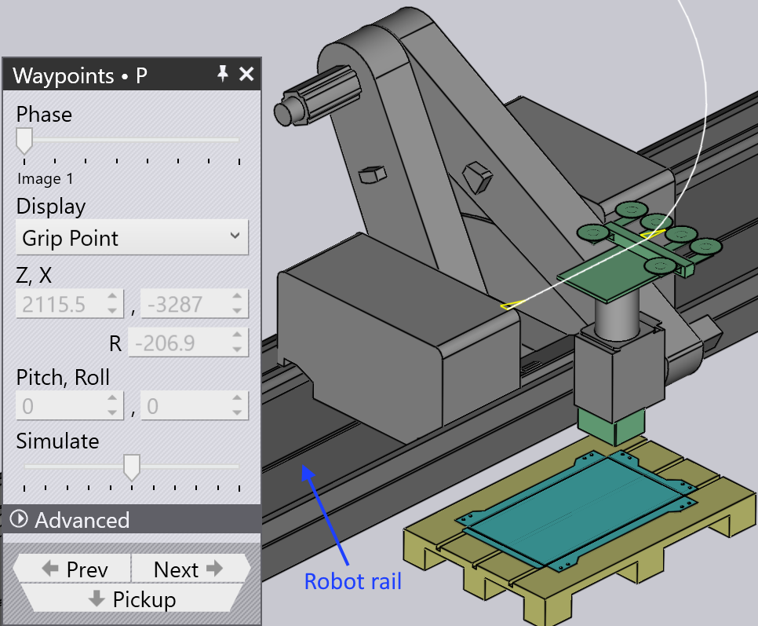

Puntos de paso
Descripción general
Cada movimiento del BendMaster consiste en waypoints que se pasan uno tras otro. Todos los puntos de paso de un movimiento son determinados por TecZone, pero la mayoría de ellos se pueden ajustar. Los puntos que están directamente relacionados con el seguimiento durante el proceso de plegado no se pueden cambiar. Varias configuraciones utilizadas para controlar los puntos de paso se enumeran a continuación:
-
Cambiar la posición de un punto de paso
-
Insertar un nuevo punto de paso o eliminar un punto de paso existente
-
Ajustar las propiedades de movimiento como velocidad e interpolación
-
Agregar un nuevo punto de paso en la posición deseada
Para acceder al panel Waypoints:
-
Haga clic directamente en el riel del robot
-
Haga clic en el enlace Waypoints desde el panel Pickup, panel Bend, panel Regrip o panel Deposit.
-
Haga clic en el enlace de puntos de paso en cualquiera de los paneles de RG-Stations



Panel Waypoints

Un panel de puntos de paso típico se muestra al lado:
-
El control deslizante Phase muestra el movimiento paso a paso de un punto de paso. Cada fase refleja una operación particular del robot como recogida, plegado, reagarre y depósito.
-
Use la opción Display para ver:
-
grip point
-
wrist point
-
robot axes.
-
-
La posición y el ángulo de la muñeca o pinza se muestran y se pueden editar. Si se seleccionan los ejes del robot, los valores de los ejes del robot se muestran y se pueden editar.
-
El rastro amarillo muestra el camino desde el paso anterior hasta este, y de este paso al siguiente (ver imagen a continuación). Los 3 triángulos pequeños indican las coordenadas locales X e Y del robot (muñeca o pinza).
-
El control deslizante Simulate se usa para mover la simulación desde la fase anterior a la siguiente fase. Si esto está en el medio, esa es la fase real que estamos editando.
-
La configuración Interpolate se usa para cambiar entre interpolaciones lineales y orientadas a ejes.
-
Las configuraciones Speed y Rounding se usan para editar la velocidad y la configuración de precisión para este paso.
-
El campo Regrip stations se usa para cambiar la posición de las estaciones de reagarre a lo largo de su eje.
-
La opción Insert se usa para crear un nuevo punto de paso ingresando nuevos valores. Los puntos de paso recién agregados se pueden eliminar con la opción Remove.
-
Use los botones Prev y Next para ir al siguiente o anterior paso (o también puede usar las teclas de flecha izquierda y derecha). Hacer clic en el botón Next mostrará cada paso en una fase. Al final de la fase, se muestra el siguiente panel de punto de paso correspondiente.
Propiedades de los puntos de paso
Según el estado del proceso, a cada punto de paso se le asigna un conjunto de atributos relacionados con el tipo de interpolación, la velocidad y la precisión del movimiento. Si es necesario, estos atributos se pueden cambiar.
Estas configuraciones se controlan en la sección Avanzada del panel de puntos de paso.
| Tipo Interpolate | Descripción |
|---|---|
Linear |
Movimiento lineal del TCP a lo largo de un camino |
Axis |
El movimiento desde la posición inicial hasta la posición final
es lo más rápido posible, independientemente del camino. |
| Tipo Speed | Descripción |
|---|---|
Max. |
Velocidad máxima |
Fast |
75% de la velocidad máxima |
Medium |
50% de la velocidad máxima |
Reduced |
30% de la velocidad máxima |
Slow |
20% de la velocidad máxima |
| Tipo Rounding | Descripción |
|---|---|
Max. |
El redondeo comienza al 50% de la longitud de la ruta más corta |
Large |
El redondeo comienza al 35% de la longitud de la ruta más corta |
Medium |
El redondeo comienza al 20% de la longitud de la ruta más corta |
Reduced |
El redondeo comienza al 10% de la longitud de la ruta más corta |
Fine |
El redondeo comienza al 5% de la longitud de la ruta más corta |
Exact |
El punto de calibración se alcanza exactamente sin superposición |

-
Longitud de la ruta entre el punto de paso y el punto final
-
Longitud ejecutada
-
Longitud de la ruta entre el punto de inicio y el punto de paso
-
Punto de paso 3 (punto final)
-
Punto de paso 2 (punto de redondeo)
-
Punto de paso 1 (punto de inicio)
Mostrar waypoints
Cuando se equipa una pieza de plegado, todos los puntos de paso se calculan automáticamente para cada fase de movimiento. Estos puntos se pueden simular fase por fase con una descripción correspondiente.

Las imágenes a continuación muestran las fases de puntos de paso de la primera operación de plegado (en vista lateral):

Modificar waypoints
La ubicación de un punto de paso se puede cambiar si es necesario, por ejemplo, para evitar pasar sobre el eje.
Entre otros aspectos relacionados con la evitación de colisiones, los puntos de paso no deseados se pueden eliminar o se pueden agregar nuevos puntos de paso.
-
Cuando se cambia la posición de un punto de paso existente, TecZone muestra un mensaje de advertencia. Haga clic en OK para continuar con el cambio del punto de paso.

-
Hacer clic en el botón Insert agregará nuevos puntos de paso.


-
Newly added waypoints are denoted by +1,+2,ect., in the phase name as shown below:

Simulate waypoints
By default the simulate slider is in the middle position. Movement of the robot from one waypoint to the other is seamlessly simulated using this slider.